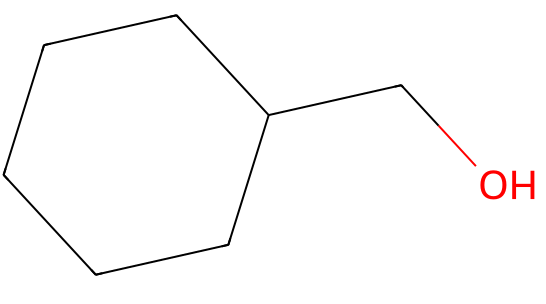
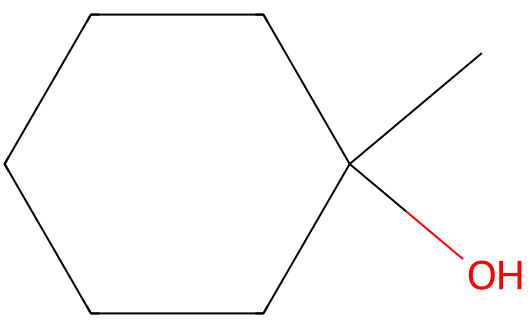

令和元年度（再試験） 問7 有機化学及び燃料
核磁気共鳴（NMR）に関する次の記述のうち、最も適切なものはどれか。
①
メチレンシクロヘキサンのヒドロホウ素化－酸化反応の生成物として考えられるシクロヘキシルメタノールと1－メチルシクロヘキサノールの2つの化合物は 1 H-NMRスペクトル測定により識別することができる。
②
アルキニル水素（-C≡C-H）とビニル型水素（>C=C(H)-）の 1 H-NMRスペクトルにおける化学シフト値（δ）を比較すると、アルキニル水素の方が低磁場側に出現する。
③
フッ素19（ 19 F）やリン31（ 31 P）の原子核は核スピンを持たないが、奇数個の陽子を持つ
④
p －ブロモアセトフェノンは分子中に8個の炭素原子を持っているため、 13 C-NMRスペクトルにおいて8本の吸収線を示す。
⑤
エナンチオトピックなプロトンは異なるNMR吸収を示す。
正答
① メチレンシクロヘキサンのヒドロホウ素化－酸化反応の生成物として考えられるシクロヘキシルメタノールと1－メチルシクロヘキサノールの2つの化合物は 1 H-NMRスペクトル測定により識別することができる。
1－メチルシクロヘキサノールにのみメチル基（-CH3）由来の炭素のピーク（0.9 ppm付近）を確認できるため、識別可能です。


2番の 1H-NMRスペクトルの化学シフト値は、NMRの外部磁場に応答してπ電子が環電流を生じます。更に、この環電流に対応する誘起磁場が発生します。アルケンやベンゼン環外側の水素は外部磁場と同じ向きの誘起磁場が発生するため反遮蔽効果により低磁場側へ出現します。対してアルキンやベンゼン環内側の水素は外部磁場と逆向きの誘起磁場が発生し、遮蔽効果により高磁場側へ出現します。
3番のフッ素19（19F）やリン31（31P）の原子核は核スピンを持つためNMRで検出できます。核スピンの有無は、スピン量子数から判断できます。スピン量子数が0のものは（例：12C、16O、28Si、32S） 核スピンを持たないためNMRで検出できません。
4番のp－ブロモアセトフェノンは、オルト位とパラ位の炭素が等価であるため6本の吸収線を示します。
5番のエナンチオトピックは鏡像異性体（エナンチオマー）の特性を持つことを意味します。エナンチオマーは融点、沸点、密度といった基本的物理的性質が同じであり、立体構造が異なるため旋光度で判断できます。NMRでは同じ吸収を示します。